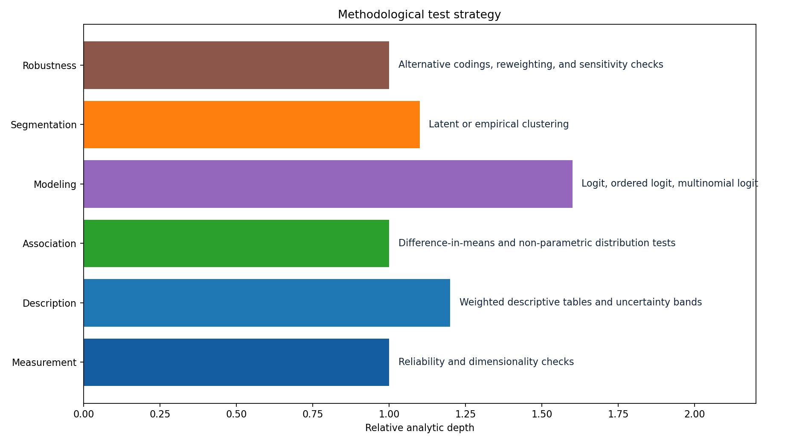
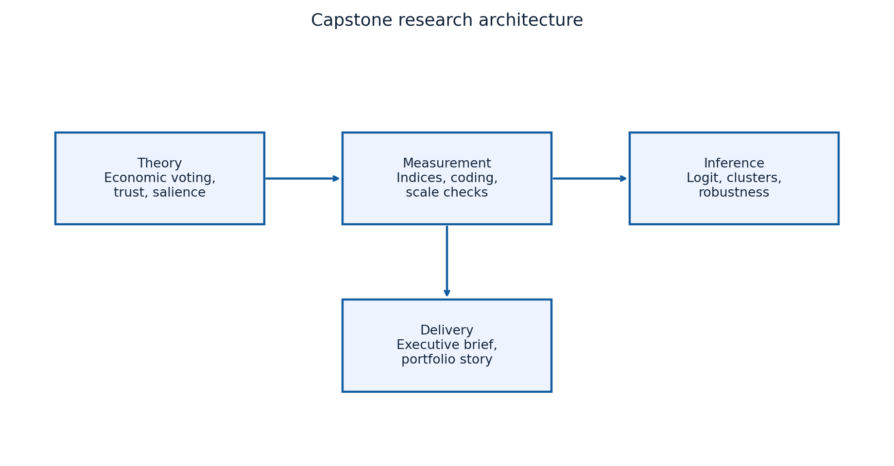

6
Core hypotheses already defined
This repository is now positioned as a serious survey-analytics capstone blueprint. It does not fake finished empirical results. Instead, it shows the harder and more valuable part: a complete research architecture that can move from theory to measurement to inference once the source survey is finalized.
The capstone is designed to study how economic expectations, institutional trust, issue salience, media environments, and sociodemographic differences shape political attitudes and behavior. The point is not only to produce a set of charts. The point is to build a project that can support interpretable political-behavior modeling and electorate segmentation without confusing correlation, explanation, and prediction.
The blueprint matters because good public-opinion work begins before the first model. It begins by deciding what the core constructs are, which mechanisms matter, what counts as valid evidence, and which limitations must be stated up front.
The blueprint is built around six connected hypotheses. Together they describe a coherent story about how citizens form political evaluations and how those evaluations translate into behavior.
The theoretical contribution of the blueprint is that it treats these constructs as linked mechanisms rather than isolated variables. Economic expectations matter because they affect approval. Trust matters because it changes participation and legitimacy. Issue salience matters because it organizes how citizens interpret politics. The project is therefore designed as an integrated explanation of political behavior rather than a loose collection of survey indicators.
A major improvement in the repository is the measurement layer. The project now specifies not only what it wants to study, but how each construct should be observed in a real survey instrument.
| Domain | Typical items | Preferred scale | Analytic role |
|---|---|---|---|
| Economic outlook | Personal finances, country trajectory, inflation expectations | Ordered categorical | Approval and vote models |
| Institutional trust | Confidence in congress, courts, presidency, electoral authority | Likert or ordinal composite | Turnout and legitimacy models |
| Issue salience | Main national problem, urgent reform, policy priorities | Top choice plus ranked preferences | Segmentation and heterogeneity analysis |
| Political behavior | Turnout intention, vote intention, government approval | Binary, ordered, or multinomial | Outcome layer |
| Exposure and context | Media source, education, age, geography, class proxy | Categorical plus continuous controls | Moderation and robustness checks |
This makes the capstone much more concrete. Instead of saying that trust or salience are important, the repository now explains which items would operationalize those ideas and what analytic job each one would do.
The project is now much more technical because it includes a staged methodology rather than a vague promise of future analysis. Each stage has a purpose, a method family, and an expected deliverable.

| Stage | Method family | Purpose |
|---|---|---|
| Measurement | Reliability and dimensionality checks | Validate scales for trust, ideology, and salience before using them in models. |
| Description | Weighted descriptive analysis | Establish a credible portrait of the electorate before moving into inference. |
| Association | Non-parametric contrasts | Check whether headline differences exist before full multivariable models. |
| Inference | Logit, ordered logit, multinomial models | Estimate interpretable effects for turnout, approval, and vote intention. |
| Segmentation | Clustering and dimensional reduction | Identify coherent voter blocs and narrative profiles. |
| Robustness | Alternative codings and sensitivity checks | Prevent the final conclusions from depending on a single operational choice. |
The repository now includes a validity matrix because a good capstone is not only about methods; it is about what can go wrong. That is especially important in survey analytics, where construct validity, sampling issues, and overinterpretation are constant risks.
| Risk | Main threat | Mitigation |
|---|---|---|
| Construct validity | Trust or ideology may be badly measured by single items. | Use reliability checks and transparent coding rules before index construction. |
| Selection bias | Low-response groups may be underrepresented. | Use survey weights and compare weighted margins with public benchmarks. |
| Model dependence | Conclusions may hinge on thresholds or link functions. | Report alternative codings and specification checks in an appendix. |
| Overinterpretation | Correlational results may be presented as causal. | State scope conditions clearly and separate explanation from prediction. |
| Temporal instability | Campaign events can move attitudes rapidly. | Anchor conclusions to fieldwork dates and flag where repeated measurement is needed. |
The capstone also includes a realistic production plan. This is useful in both academic and professional settings because it shows that the project can move from concept to delivery without collapsing into an endless notebook.


The execution sequence is now strong enough that the repository can function as both a capstone proposal and a portfolio artifact. Once the final survey source is selected, the structure will already exist for coding, testing, modeling, and presenting the results.
The main improvement is strategic as well as technical. This repository no longer looks like an unfinished idea. It now looks like a research design with theoretical anchors, measurable constructs, a test plan, and explicit safeguards against bad inference.
That makes it valuable even before empirical execution. It demonstrates the capacity to define a serious analytical project, identify the right methods, and structure delivery in a way that is credible to professors, employers, and collaborators alike.